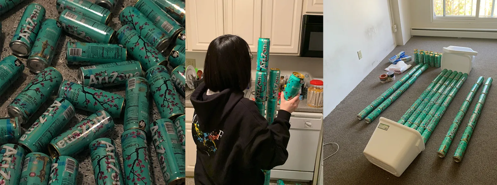
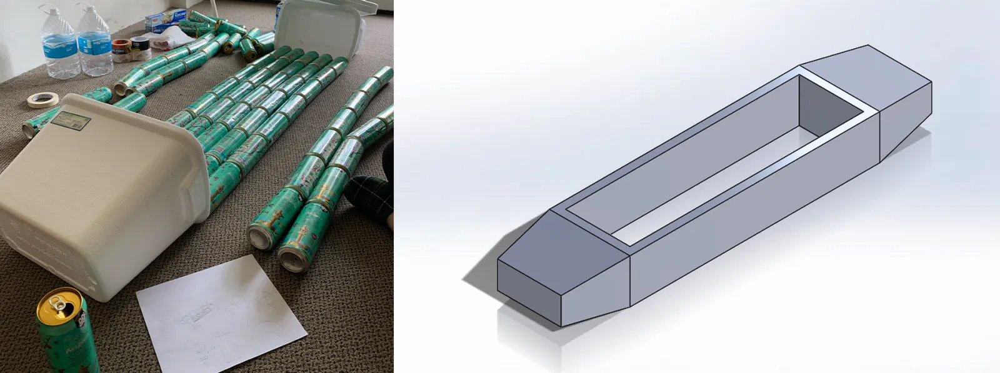
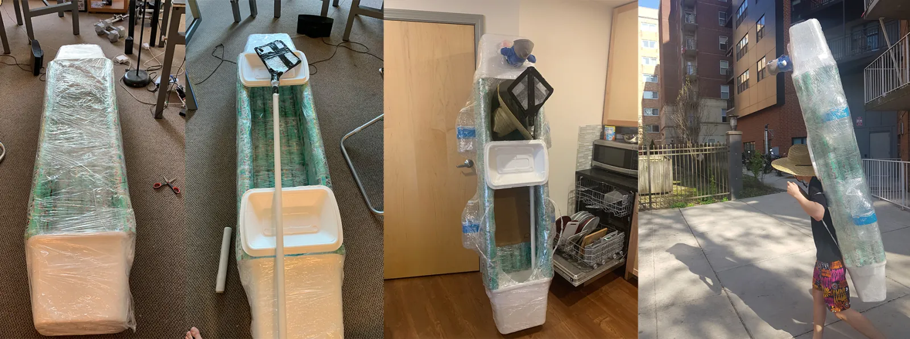
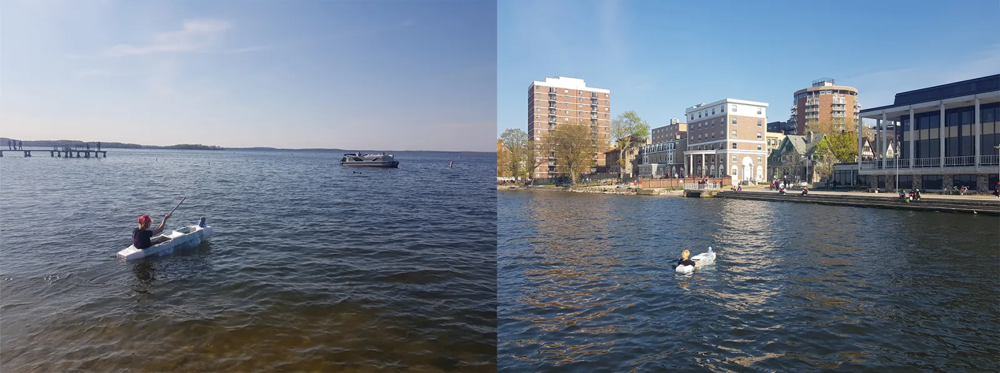
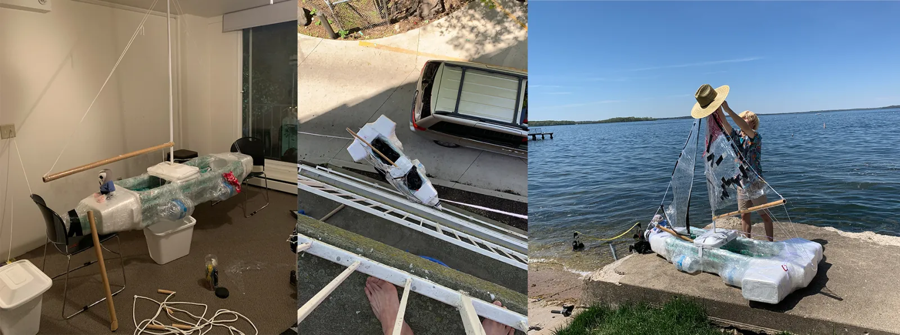
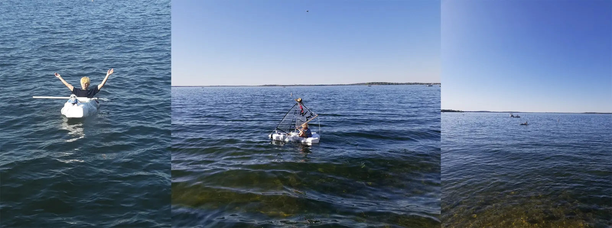

Overview
Disclaimer: This is not an advertisement for the state of Arizona, Arizona canned drinks, or Redbull.
When Covid hit and classes moved online, my friends and I started drinking Arizona (a lot of it). We collected around 80 cans in a matter of a few weeks.


Sketches and modelling
Eager to build and explore, I decided to build a boat to adventure the mysterious waters of lake Mendota. Thanks to the simplicity of the project, few sketches and quick modelling was all I needed for the build.
Build and float tests
Recycled materials were wrapped, taped and cut. After some float tests, 4 additional bottles were added for support.


First sail test
First sail test at Lake Mendota, Madison, WI. Huge success! The boat was stable, sturdy and easy to steer.
Adding a sail
More support was added to carry heavier passengers, and a sail was added for aesthetics and Badger spirit. After all the additions, it was too big for the door and had to be carried down from the balcony.

Second sail
Second successful sail at Lake Mendota, Madison, WI.
Photos
Photos from successful sails.

Similar work

Recycled Newspaper Mache Canoe
I love camping. I love Canoeing. And I love Fishing. I also had prior experience building a canoe from recycled materials (AZSZ 1.0). So why not build another?

3D Print Projects
A book case, a JBL speaker cover, a desktop study mate and more, all 3D printed.
Hydrone
Underwater drone project built during CMU's Build 18 competition for recreational, environmental, and safety applications.